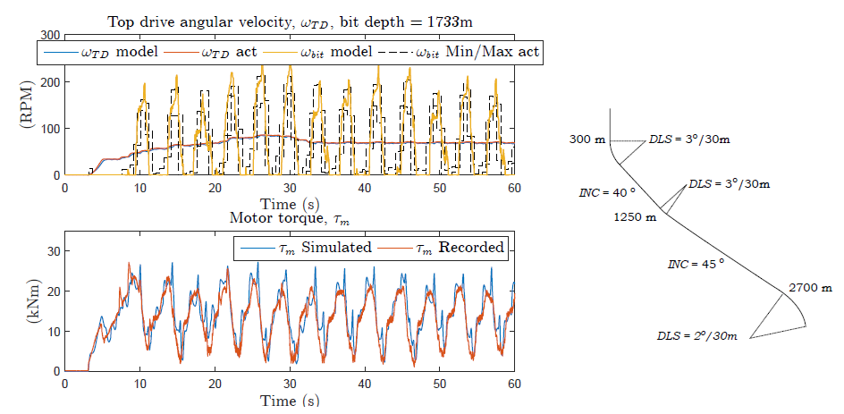

Drilling vibrations
I have worked extensively on torsional and axial drill-string dynamics, including side-force-driven stick-slip and regenerative effects. A concise overview is available in this University of Minnesota talk.
Research scientist in modeling, estimation, and control of drilling systems
I work at the intersection of nonlinear dynamics, distributed-parameter systems, and applied control. My research centers on physically grounded models and practical algorithms that improve drilling performance, reduce vibration risk, and support real-time decision making.
I have worked extensively on torsional and axial drill-string dynamics, including side-force-driven stick-slip and regenerative effects. A concise overview is available in this University of Minnesota talk.
Weight-on-bit optimization via extremum seeking was studied both analytically and experimentally, with particular attention to transient foundering effects and practical implementation constraints.
My doctoral thesis and subsequent work developed simplified two-phase models designed for controller and estimator synthesis, with applications in drilling and production-oriented settings.